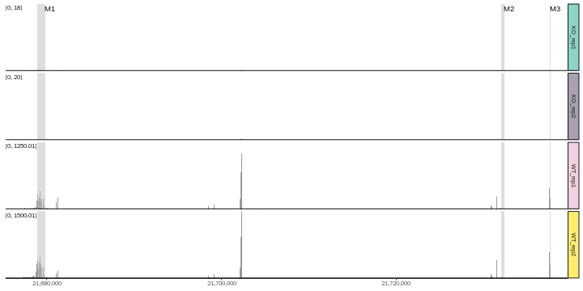
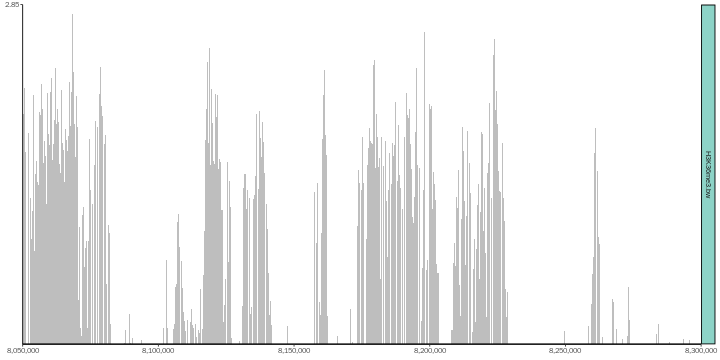
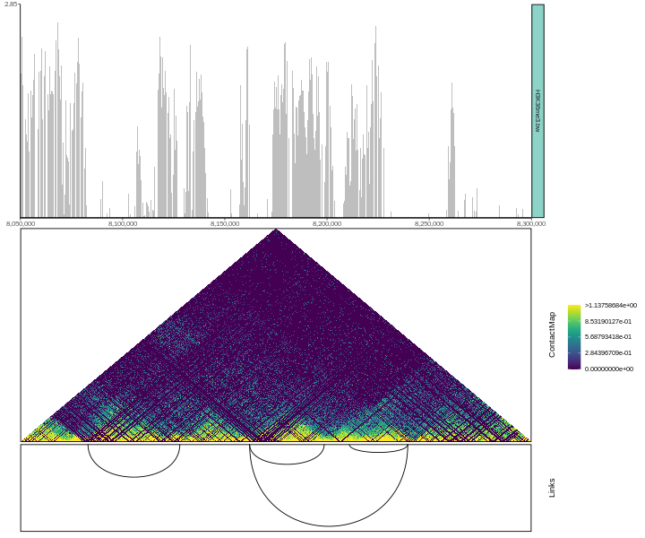
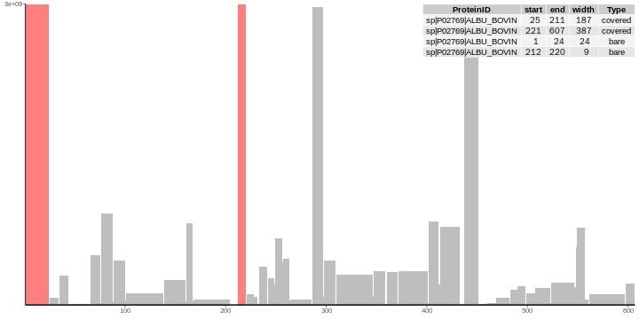

Introduction
The goal of ggcoverage is simplify the process of visualizing omics coverage. It contains three main parts:
-
Load the data:
ggcoveragecan load BAM, BigWig (.bw), BedGraph, txt/xlsx files from various omics data, including WGS, RNA-seq, ChIP-seq, ATAC-seq, proteomics, et al. - Create omics coverage plot
-
Add annotations:
ggcoveragesupports six different annotations:- base and amino acid annotation: Visualize genome coverage at single-nucleotide level with bases and amino acids.
- GC annotation: Visualize genome coverage with GC content
- CNV annotation: Visualize genome coverage with copy number variation (CNV)
- gene annotation: Visualize genome coverage across genes
- transcription annotation: Visualize genome coverage across different transcripts
- ideogram annotation: Visualize the region showing on whole chromosome
- peak annotation: Visualize genome coverage and peak identified
- contact map annotation: Visualize genome coverage with Hi-C contact map
- link annotation: Visualize genome coverage with contacts
- peotein feature annotation: Visualize protein coverage with features
ggcoverage utilizes ggplot2 plotting system, so its usage is ggplot2-style!
Installation
ggcoverage is an R package distributed as part of the CRAN. To install the package, start R and enter:
# install via CRAN
install.packages("ggcoverage")
# install via Github
# install.package("remotes") #In case you have not installed it.
remotes::install_github("showteeth/ggcoverage")In general, it is recommended to install from Github repository (update more timely).
Once ggcoverage is installed, it can be loaded by the following command.
library("rtracklayer")
library("ggcoverage")
library("ggpattern")Manual
ggcoverage provides two vignettes:
- detailed manual: step-by-step usage
- customize the plot: customize the plot and add additional layer
RNA-seq data
Load the data
The RNA-seq data used here are from Transcription profiling by high throughput sequencing of HNRNPC knockdown and control HeLa cells, we select four sample to use as example: ERR127307_chr14, ERR127306_chr14, ERR127303_chr14, ERR127302_chr14, and all bam files are converted to bigwig file with deeptools.
Load metadata:
# load metadata
meta.file <- system.file("extdata", "RNA-seq", "meta_info.csv", package = "ggcoverage")
sample.meta = read.csv(meta.file)
sample.meta
#> SampleName Type Group
#> 1 ERR127302_chr14 KO_rep1 KO
#> 2 ERR127303_chr14 KO_rep2 KO
#> 3 ERR127306_chr14 WT_rep1 WT
#> 4 ERR127307_chr14 WT_rep2 WTLoad track files:
# track folder
track.folder = system.file("extdata", "RNA-seq", package = "ggcoverage")
# load bigwig file
track.df = LoadTrackFile(track.folder = track.folder, format = "bw",
region = "chr14:21,677,306-21,737,601", extend = 2000,
meta.info = sample.meta)
# check data
head(track.df)
#> seqnames start end score Type Group
#> 1 chr14 21675306 21675950 0 KO_rep1 KO
#> 2 chr14 21675951 21676000 1 KO_rep1 KO
#> 3 chr14 21676001 21676100 2 KO_rep1 KO
#> 4 chr14 21676101 21676150 1 KO_rep1 KO
#> 5 chr14 21676151 21677100 0 KO_rep1 KO
#> 6 chr14 21677101 21677200 2 KO_rep1 KOPrepare mark region:
# create mark region
mark.region=data.frame(start=c(21678900,21732001,21737590),
end=c(21679900,21732400,21737650),
label=c("M1", "M2", "M3"))
# check data
mark.region
#> start end label
#> 1 21678900 21679900 M1
#> 2 21732001 21732400 M2
#> 3 21737590 21737650 M3Load GTF
To add gene annotation, the gtf file should contain gene_type and gene_name attributes in column 9; to add transcript annotation, the gtf file should contain transcript_name attribute in column 9.
gtf.file = system.file("extdata", "used_hg19.gtf", package = "ggcoverage")
gtf.gr = rtracklayer::import.gff(con = gtf.file, format = 'gtf')Basic coverage
The basic coverage plot has two types:
-
facet: Create subplot for every track (specified by
facet.key). This is default. - joint: Visualize all tracks in a single plot.
joint view
Create line plot for every sample (facet.key = "Type") and color by every sample (group.key = "Type"):
basic.coverage = ggcoverage(data = track.df, color = "auto",
plot.type = "joint", facet.key = "Type", group.key = "Type",
mark.region = mark.region, range.position = "out")
basic.coverage
Create group average line plot (sample is indicated by facet.key = "Type", group is indicated by group.key = "Group"):
basic.coverage = ggcoverage(data = track.df, color = "auto",
plot.type = "joint", facet.key = "Type", group.key = "Group",
joint.avg = TRUE,
mark.region = mark.region, range.position = "out")
basic.coverage
facet view
basic.coverage = ggcoverage(data = track.df, color = "auto", plot.type = "facet",
mark.region = mark.region, range.position = "out")
basic.coverage
Custom Y-axis style
Change the Y-axis scale label in/out of plot region with range.position:
basic.coverage = ggcoverage(data = track.df, color = "auto", plot.type = "facet",
mark.region = mark.region, range.position = "in")
basic.coverage
Shared/Free Y-axis scale with facet.y.scale:
basic.coverage = ggcoverage(data = track.df, color = "auto", plot.type = "facet",
mark.region = mark.region, range.position = "in",
facet.y.scale = "fixed")
basic.coverage

Add ideogram
basic.coverage +
geom_gene(gtf.gr=gtf.gr) +
geom_ideogram(genome = "hg19",plot.space = 0)
#> Loading ideogram...
#> Loading ranges...
#> Scale for x is already present.
#> Adding another scale for x, which will replace the existing scale.
basic.coverage +
geom_transcript(gtf.gr=gtf.gr,label.vjust = 1.5) +
geom_ideogram(genome = "hg19",plot.space = 0)
#> Loading ideogram...
#> Loading ranges...
#> Scale for x is already present.
#> Adding another scale for x, which will replace the existing scale.
DNA-seq data
CNV
Example 1
Load the data
The DNA-seq data used here are from Copy number work flow, we select tumor sample, and get bin counts with cn.mops::getReadCountsFromBAM with WL 1000.
# prepare metafile
cnv.meta.info = data.frame(
SampleName = c("CNV_example"),
Type = c("tumor"),
Group = c("tumor")
)
# track file
track.file = system.file("extdata", "DNA-seq", "CNV_example.txt", package = "ggcoverage")
# load txt file
track.df = LoadTrackFile(track.file = track.file, format = "txt", region = "chr4:61750000-62,700,000",
meta.info = cnv.meta.info)
# check data
head(track.df)
#> seqnames start end score Type Group
#> 1 chr4 61748000 61748000 25 tumor tumor
#> 2 chr4 61748001 61749000 24 tumor tumor
#> 3 chr4 61749001 61750000 17 tumor tumor
#> 4 chr4 61750001 61751000 23 tumor tumor
#> 5 chr4 61751001 61752000 14 tumor tumor
#> 6 chr4 61752001 61753000 22 tumor tumorBasic coverage
basic.coverage = ggcoverage(data = track.df,color = "grey", mark.region = NULL,
range.position = "out")
basic.coverage
Add GC annotations
Add GC, ideogram and gene annotaions.
# load genome data
library("BSgenome.Hsapiens.UCSC.hg19")
#> Loading required package: BSgenome
#> Loading required package: Biostrings
#> Loading required package: XVector
#>
#> Attaching package: 'Biostrings'
#> The following object is masked from 'package:base':
#>
#> strsplit
# create plot
basic.coverage +
geom_gc(bs.fa.seq=BSgenome.Hsapiens.UCSC.hg19) +
geom_gene(gtf.gr=gtf.gr) +
geom_ideogram(genome = "hg19")
#> Loading ideogram...
#> Loading ranges...
#> Scale for x is already present.
#> Adding another scale for x, which will replace the existing scale.
Example 2
Load the data
The DNA-seq data used here are from Genome-wide copy number analysis of single cells, and the accession number is SRR054616.
# track file
track.file <- system.file("extdata", "DNA-seq", "SRR054616.bw", package = "ggcoverage")
# load track
track.df = LoadTrackFile(track.file = track.file, format = "bw", region = "4:1-160000000")
#> Sample without metadata!
# add chr prefix
track.df$seqnames = paste0("chr", track.df$seqnames)
# check data
head(track.df)
#> seqnames start end score Type Group
#> 1 chr4 1 50000 197 SRR054616.bw SRR054616.bw
#> 2 chr4 50001 100000 598 SRR054616.bw SRR054616.bw
#> 3 chr4 100001 150000 287 SRR054616.bw SRR054616.bw
#> 4 chr4 150001 200000 179 SRR054616.bw SRR054616.bw
#> 5 chr4 200001 250000 282 SRR054616.bw SRR054616.bw
#> 6 chr4 250001 300000 212 SRR054616.bw SRR054616.bwBasic coverage
basic.coverage = ggcoverage(data = track.df, color = "grey",
mark.region = NULL, range.position = "out")
basic.coverage
Load CNV file
# prepare files
cnv.file <- system.file("extdata", "DNA-seq", "SRR054616_copynumber.txt", package = "ggcoverage")
# read CNV
cnv.df = read.table(file = cnv.file, sep = "\t", header = TRUE)
# check data
head(cnv.df)
#> chrom chrompos cn.ratio copy.number
#> 1 chr4 1 11.518554 5
#> 2 chr4 90501 5.648878 5
#> 3 chr4 145220 4.031609 5
#> 4 chr4 209519 5.005852 5
#> 5 chr4 268944 4.874096 5
#> 6 chr4 330272 4.605368 5Add annotations
Add GC, ideogram and CNV annotations.
# load genome data
library("BSgenome.Hsapiens.UCSC.hg19")
# create plot
basic.coverage +
geom_gc(bs.fa.seq=BSgenome.Hsapiens.UCSC.hg19) +
geom_cnv(cnv.df = cnv.df, bin.col = 3, cn.col = 4) +
geom_ideogram(genome = "hg19",plot.space = 0, highlight.centromere = TRUE)
#> Loading ideogram...
#> Loading ranges...
#> Scale for x is already present.
#> Adding another scale for x, which will replace the existing scale.
Single-nucleotide level
Load the data
# prepare sample metadata
sample.meta <- data.frame(
SampleName = c("tumorA.chr4.selected"),
Type = c("tumorA"),
Group = c("tumorA")
)
# load bam file
bam.file = system.file("extdata", "DNA-seq", "tumorA.chr4.selected.bam", package = "ggcoverage")
track.df <- LoadTrackFile(
track.file = bam.file,
meta.info = sample.meta,
single.nuc=TRUE, single.nuc.region="chr4:62474235-62474295"
)
head(track.df)
#> seqnames start end score Type Group
#> 1 chr4 62474235 62474236 5 tumorA tumorA
#> 2 chr4 62474236 62474237 5 tumorA tumorA
#> 3 chr4 62474237 62474238 5 tumorA tumorA
#> 4 chr4 62474238 62474239 6 tumorA tumorA
#> 5 chr4 62474239 62474240 6 tumorA tumorA
#> 6 chr4 62474240 62474241 6 tumorA tumorADefault color scheme
For base and amino acid annotation, we have following default color schemes, you can change with nuc.color and aa.color parameters.
Default color scheme for base annotation is Clustal-style, more popular color schemes is available here.
# color scheme
nuc.color = c("A" = "#ff2b08", "C" = "#009aff", "G" = "#ffb507", "T" = "#00bc0d")
opar <- graphics::par()
# create plot
graphics::par(mar = c(1, 5, 1, 1))
graphics::image(
1:length(nuc.color), 1, as.matrix(1:length(nuc.color)),
col = nuc.color,
xlab = "", ylab = "", xaxt = "n", yaxt = "n", bty = "n"
)
graphics::text(1:length(nuc.color), 1, names(nuc.color))
graphics::mtext(
text = "Base", adj = 1, las = 1,
side = 2
)
# reset par default
graphics::par(opar)Default color scheme for amino acid annotation is from Residual colours: a proposal for aminochromography:
aa.color = c(
"D" = "#FF0000", "S" = "#FF2400", "T" = "#E34234", "G" = "#FF8000", "P" = "#F28500",
"C" = "#FFFF00", "A" = "#FDFF00", "V" = "#E3FF00", "I" = "#C0FF00", "L" = "#89318C",
"M" = "#00FF00", "F" = "#50C878", "Y" = "#30D5C8", "W" = "#00FFFF", "H" = "#0F2CB3",
"R" = "#0000FF", "K" = "#4b0082", "N" = "#800080", "Q" = "#FF00FF", "E" = "#8F00FF",
"*" = "#FFC0CB", " " = "#FFFFFF", " " = "#FFFFFF", " " = "#FFFFFF", " " = "#FFFFFF"
)
graphics::par(mar = c(1, 5, 1, 1))
graphics::image(
1:5, 1:5, matrix(1:length(aa.color),nrow=5),
col = rev(aa.color),
xlab = "", ylab = "", xaxt = "n", yaxt = "n", bty = "n"
)
graphics::text(expand.grid(1:5,1:5), names(rev(aa.color)))
graphics::mtext(
text = "Amino acids", adj = 1, las = 1,
side = 2
)
# reset par default
graphics::par(opar)Add base and amino acid annotation
Use twill to mark position with SNV:
library(ggpattern)
# create plot with twill mark
ggcoverage(data = track.df, color = "grey", range.position = "out",
single.nuc=T, rect.color = "white") +
geom_base(bam.file = bam.file,
bs.fa.seq = BSgenome.Hsapiens.UCSC.hg19,
mark.type = "twill") +
geom_ideogram(genome = "hg19",plot.space = 0)
#> Loading ideogram...
#> Loading ranges...
#> Scale for x is already present.
#> Adding another scale for x, which will replace the existing scale.
Use star to mark position with SNV:
# create plot with star mark
ggcoverage(data = track.df, color = "grey", range.position = "out",
single.nuc=T, rect.color = "white") +
geom_base(bam.file = bam.file,
bs.fa.seq = BSgenome.Hsapiens.UCSC.hg19,
mark.type = "star") +
geom_ideogram(genome = "hg19",plot.space = 0)
#> Loading ideogram...
#> Loading ranges...
#> Scale for x is already present.
#> Adding another scale for x, which will replace the existing scale.
Highlight position with SNV:
# highlight
ggcoverage(data = track.df, color = "grey", range.position = "out",
single.nuc=T, rect.color = "white") +
geom_base(bam.file = bam.file,
bs.fa.seq = BSgenome.Hsapiens.UCSC.hg19,
mark.type = "highlight") +
geom_ideogram(genome = "hg19",plot.space = 0)
#> Loading ideogram...
#> Loading ranges...
#> Scale for x is already present.
#> Adding another scale for x, which will replace the existing scale.
ChIP-seq data
The ChIP-seq data used here are from DiffBind, I select four sample to use as example: Chr18_MCF7_input, Chr18_MCF7_ER_1, Chr18_MCF7_ER_3, Chr18_MCF7_ER_2, and all bam files are converted to bigwig file with deeptools.
Create metadata:
# load metadata
sample.meta = data.frame(SampleName=c('Chr18_MCF7_ER_1','Chr18_MCF7_ER_2','Chr18_MCF7_ER_3','Chr18_MCF7_input'),
Type = c("MCF7_ER_1","MCF7_ER_2","MCF7_ER_3","MCF7_input"),
Group = c("IP", "IP", "IP", "Input"))
sample.meta
#> SampleName Type Group
#> 1 Chr18_MCF7_ER_1 MCF7_ER_1 IP
#> 2 Chr18_MCF7_ER_2 MCF7_ER_2 IP
#> 3 Chr18_MCF7_ER_3 MCF7_ER_3 IP
#> 4 Chr18_MCF7_input MCF7_input InputLoad track files:
# track folder
track.folder = system.file("extdata", "ChIP-seq", package = "ggcoverage")
# load bigwig file
track.df = LoadTrackFile(track.folder = track.folder, format = "bw", region = "chr18:76822285-76900000",
meta.info = sample.meta)
# check data
head(track.df)
#> seqnames start end score Type Group
#> 1 chr18 76820285 76820400 219.658005 MCF7_ER_1 IP
#> 2 chr18 76820401 76820700 0.000000 MCF7_ER_1 IP
#> 3 chr18 76820701 76821000 439.316010 MCF7_ER_1 IP
#> 4 chr18 76821001 76821300 219.658005 MCF7_ER_1 IP
#> 5 chr18 76821301 76821600 0.000000 MCF7_ER_1 IP
#> 6 chr18 76821601 76821900 219.658005 MCF7_ER_1 IPPrepare mark region:
# create mark region
mark.region=data.frame(start=c(76822533),
end=c(76823743),
label=c("Promoter"))
# check data
mark.region
#> start end label
#> 1 76822533 76823743 PromoterBasic coverage
basic.coverage = ggcoverage(data = track.df, color = "auto",
mark.region=mark.region, show.mark.label = FALSE)
basic.coverage
Add annotations
Add gene, ideogram and peak annotations. To create peak annotation, we first get consensus peaks with MSPC.
# get consensus peak file
peak.file = system.file("extdata", "ChIP-seq", "consensus.peak", package = "ggcoverage")
basic.coverage +
geom_gene(gtf.gr=gtf.gr) +
geom_peak(bed.file = peak.file) +
geom_ideogram(genome = "hg19",plot.space = 0)
#> Loading ideogram...
#> Loading ranges...
#> Scale for x is already present.
#> Adding another scale for x, which will replace the existing scale.
Hi-C data
The Hi-C data are from pyGenomeTracks: reproducible plots for multivariate genomic datasets.
The Hi-C matrix visualization is implemented by HiCBricks.
Load track data
library(ggcoverage)
library(GenomicRanges)
# prepare track dataframe
track.file = system.file("extdata", "HiC", "H3K36me3.bw", package = "ggcoverage")
track.df = LoadTrackFile(track.file = track.file, format = "bw",
region = "chr2L:8050000-8300000", extend = 0)
#> Sample without metadata!
track.df$score = ifelse(track.df$score <0, 0, track.df$score)
# check the data
head(track.df)
#> seqnames start end score Type Group
#> 1 chr2L 8050000 8050009 1.66490245 H3K36me3.bw H3K36me3.bw
#> 2 chr2L 8050015 8050049 1.59976900 H3K36me3.bw H3K36me3.bw
#> 3 chr2L 8050057 8050091 1.60730922 H3K36me3.bw H3K36me3.bw
#> 4 chr2L 8050097 8050131 1.65555012 H3K36me3.bw H3K36me3.bw
#> 5 chr2L 8050137 8050171 1.71025538 H3K36me3.bw H3K36me3.bw
#> 6 chr2L 8050176 8050210 1.75198197 H3K36me3.bw H3K36me3.bwLoad Hi-C data
Matrix:
## matrix
hic.mat.file = system.file("extdata", "HiC", "HiC_mat.txt", package = "ggcoverage")
hic.mat = read.table(file = hic.mat.file, sep = "\t")
hic.mat = as.matrix(hic.mat)Bin table:
## bin
hic.bin.file = system.file("extdata", "HiC", "HiC_bin.txt", package = "ggcoverage")
hic.bin = read.table(file = hic.bin.file, sep = "\t")
colnames(hic.bin) = c("chr", "start", "end")
hic.bin.gr = GenomicRanges::makeGRangesFromDataFrame(df = hic.bin)
## transfrom func
FailSafe_log10 <- function(x){
x[is.na(x) | is.nan(x) | is.infinite(x)] <- 0
return(log10(x+1))
}Data transfromation method:
## transfrom func
FailSafe_log10 <- function(x){
x[is.na(x) | is.nan(x) | is.infinite(x)] <- 0
return(log10(x+1))
}Load link
# prepare arcs
link.file = system.file("extdata", "HiC", "HiC_link.bedpe", package = "ggcoverage")Basic coverage
basic.coverage = ggcoverage(data = track.df, color = "grey",
mark.region = NULL, range.position = "out")
basic.coverage
Add annotations
Add link, contact mapannotations:
basic.coverage +
geom_tad(matrix = hic.mat, granges = hic.bin.gr, value.cut = 0.99,
color.palette = "viridis", transform.fun = FailSafe_log10,
top = FALSE, show.rect = TRUE) +
geom_link(link.file = link.file, file.type = "bedpe", show.rect = TRUE)
#> Read 534 lines after Skipping 0 lines
#> Inserting Data at location: 1
#> Data length: 534
#> Loaded 2315864 bytes of data...
#> Read 534 records...
#> Scale for y is already present.
#> Adding another scale for y, which will replace the existing scale.
#> Scale for x is already present.
#> Adding another scale for x, which will replace the existing scale.
Mass spectrometry protein coverage
Mass spectrometry (MS) is an important method for the accurate mass determination and characterization of proteins, and a variety of methods and instrumentations have been developed for its many uses. After MS, we can check the coverage of protein to check the quality of the data and find the reason why the segment did not appear and improve the experiment.
Load coverage
The exported coverage from Proteome Discoverer:
library(openxlsx)
# prepare coverage dataframe
coverage.file <- system.file("extdata", "Proteomics", "MS_BSA_coverage.xlsx", package = "ggcoverage")
coverage.df <- openxlsx::read.xlsx(coverage.file)
# check the data
head(coverage.df)
#> Confidence Annotated.Sequence
#> 1 High [K].ATEEQLKTVMENFVAFVDKCCAADDKEACFAVEGPK.[L]
#> 2 High [K].ATEEQLKTVMENFVAFVDKCCAADDKEACFAVEGPK.[L]
#> 3 High [K].TVMENFVAFVDKCCAADDKEACFAVEGPK.[L]
#> 4 High [K].HLVDEPQNLIKQNCDQFEKLGEYGFQNALIVR.[Y]
#> 5 High [R].RHPYFYAPELLYYANKYNGVFQECCQAEDKGACLLPK.[I]
#> 6 High [K].AFDEKLFTFHADICTLPDTEKQIKK.[Q]
#> Modifications Contaminant
#> 1 3xCarbamidomethyl [C20; C21; C29] TRUE
#> 2 3xCarbamidomethyl [C20; C21; C29]; 1xOxidation [M10] TRUE
#> 3 3xCarbamidomethyl [C13; C14; C22]; 1xOxidation [M3] TRUE
#> 4 1xCarbamidomethyl [C14] TRUE
#> 5 3xCarbamidomethyl [C24; C25; C33] TRUE
#> 6 1xCarbamidomethyl [C14] TRUE
#> #.Protein.Groups #.Proteins #.PSMs Master.Protein.Accessions
#> 1 1 2 15 ALBU_BOVIN
#> 2 1 2 26 ALBU_BOVIN
#> 3 1 2 14 ALBU_BOVIN
#> 4 1 2 41 ALBU_BOVIN
#> 5 1 2 37 ALBU_BOVIN
#> 6 1 2 40 ALBU_BOVIN
#> Positions.in.Master.Proteins Modifications.in.Master.Proteins
#> 1 ALBU_BOVIN [562-597] NA
#> 2 ALBU_BOVIN [562-597] NA
#> 3 ALBU_BOVIN [569-597] NA
#> 4 ALBU_BOVIN [402-433] NA
#> 5 ALBU_BOVIN [168-204] NA
#> 6 ALBU_BOVIN [524-548] NA
#> #.Missed.Cleavages Theo..MH+.[Da] Abundance:.F3:.Sample Quan.Info
#> 1 3 4107.88065 18692597.5 <NA>
#> 2 3 4123.87556 87767162.0 <NA>
#> 3 2 3324.46798 19803927.2 <NA>
#> 4 2 3815.91737 204933705.0 <NA>
#> 5 3 4513.12024 57012156.5 <NA>
#> 6 3 2995.52337 183934556.7 <NA>
#> Found.in.Sample:.[S3].F3:.Sample Confidence.(by.Search.Engine):.Sequest.HT
#> 1 High High
#> 2 High High
#> 3 High High
#> 4 High High
#> 5 High High
#> 6 High High
#> XCorr.(by.Search.Engine):.Sequest.HT Top.Apex.RT.[min]
#> 1 11.96 97.50
#> 2 10.91 90.09
#> 3 9.89 84.90
#> 4 9.75 91.84
#> 5 8.94 93.30
#> 6 8.90 75.40The input protein fasta:
library(Biostrings)
fasta.file <- system.file("extdata", "Proteomics", "MS_BSA_coverage.fasta", package = "ggcoverage")
# prepare track dataframe
protein.set <- Biostrings::readAAStringSet(fasta.file)
# check the data
protein.set
#> AAStringSet object of length 2:
#> width seq names
#> [1] 607 MKWVTFISLLLLFSSAYSRGVFR...DDKEACFAVEGPKLVVSTQTALA sp|P02769|ALBU_BOVIN
#> [2] 583 DTHKSEIAHRFKDLGEEHFKGLV...DDKEACFAVEGPKLVVSTQTALA decoyProtein coverage
protein.coverage = ggprotein(coverage.file = coverage.file, fasta.file = fasta.file,
protein.id = "sp|P02769|ALBU_BOVIN", range.position = "out")
protein.coverage
Add annotation
We can obtain features of the protein from UniProt. For example, the above protein coverage plot shows that there is empty region in 1-24, and this empty region in UniProt is annotated as Signal peptide and Propeptide peptide. When the protein is mature and released extracellular, these peptides will be cleaved. This is the reason why there is empty region in 1-24.
# protein feature obtained from UniProt
protein.feature.df = data.frame(ProteinID = "sp|P02769|ALBU_BOVIN", start = c(1, 19, 25),
end = c(18, 24, 607),
Type = c("Signal", "Propeptide", "Chain"))
# add annotation
protein.coverage +
geom_feature(feature.df = protein.feature.df, feature.color = c("#4d81be","#173b5e","#6a521d"))
Code of Conduct
Please note that the ggcoverage project is released with a Contributor Code of Conduct. By contributing to this project, you agree to abide by its terms.